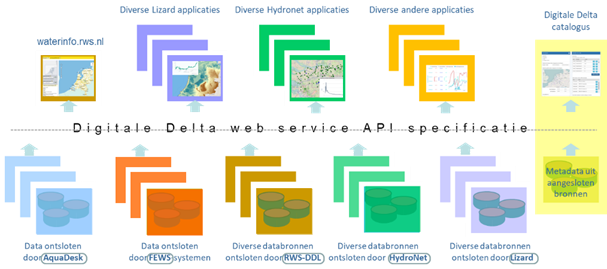

Digitale Delta
|
|
Dit is het eerste concept van de nieuwe Digitale Delta
web site. Hij is nog in ontwikkeling (zowel qua inhoud als qua layout), en zal per 1 januari 2019 de oude website (http://www.digitaldelta.nu) vervangen. This is
the first draft for the new Digital Delta web site. Currently it is in Dutch
only. |
Wat is de Digitale Delta?
De Digitale Delta is een samenwerking van:
·
waterbeherende overheden op lokaal, regionaal en
nationaal niveau;
·
marktpartijen die software-producten en advies
leveren ten behoeve van het waterbeheer;
·
kennisinstituten
De Digitale Delta richt zich op slim en integraal
waterbeheer in de breedste zin van het woord. Het doel is waterbeheergegevens
eenvoudig beschikbaar te stellen aan de eigen organisatie en aan organisaties
waarmee wordt samengewerkt. Door deze efficiënte uitwisseling van gegevens kan
waterbeheer, ook over verschillenden stroom- en beheersgebieden, slimmer en
effectiever worden uitgevoerd.
Om dit te realiseren bestaat de kern van de Digitale
Delta uit heldere afspraken over het op een uniforme en waar mogelijk
gestandaardiseerde manier uitwisselen van gegevens. Waterbeherende overheden,
kennisinstituten en marktpartijen volgen deze afspraken.
Wat biedt Digitale Delta?
Vanwege de ‘gestroomlijnde’ informatiedeling kan snel en
adequaat worden geanticipeerd op acute en structurele veranderingen in de
waterhuishouding. Ketenpartijen in het waterbeheer kunnen door Digitale Delta
voortbouwen op actuele, continu toenemende en verrijkte data om inzichten te
bieden en beslissing ondersteunende applicaties te ontwikkelen. Waterbeherende
overheden kunnen applicaties en visualisaties van verschillende leveranciers
gemakkelijk en kosteneffectief combineren om tot een integrale aanpak van het
waterbeheer en gebiedsontwikkeling te komen.
Beschikbare gegevens kunnen worden getoond in viewers en
indien gewenst worden bijgehouden in catalogi. Deze kunnen regionaal of
thematisch ingestoken zijn, of kunnen geënt zijn op gebruik binnen een
operationeel kader, bijvoorbeeld voor specifieke analyses.
De data wordt ontsloten via de DD-API (Digitale Delta Application Programming
Interface), die in een set van definities en regels voorziet, op basis
waarvan data gevraagd en geleverd wordt.
Onderstaande figuur geeft dit schematisch weer. Zie de DD-API pagina voor meer details.

De organisatie rond de Digitale Delta
In 2019 zal het Informatiehuis Water (IHW) zorg gaan
dragen voor het functionele beheer van de API’s. Daartoe
worden twee teams ingesteld:
·
De Digitale Delta werkgroep, die de inhoud van de
DD-API vaststelt
·
Een architecture board, die de kwaliteit van de DD-API-specificaties beoordeelt (goede
documentatie, correcte voorbeelden, formele specificatietaal, et cetera).
IHW stelt vervolgens op basis van deze input de huidige
en toekomstige DD-API-versies vast.
Werken met Digitale Delta?
Digitale Delta is opgezet voor de gehele keten, die
betrokken is bij het beheer van nationale en regionale
(oppervlakte)watersystemen. Tot de beoogde gebruikers behoren daarmee
overheden, programmabureaus, kennisinstituten, informatiehuizen, adviesbureaus
en aannemerijen binnen de watersector.
Voor overheden die een databron
willen ontsluiten, voor ontwikkelaars die een informatie- of
visualisatieapplicatie willen ontwikkelen en voor adviesbureaus die binnen
adviesprojecten gebruik willen maken van de mogelijkheden die Digitale Delta
biedt, neem contact op of vul het formulier hieronder in (contactformulier volgt).
Een gedetailleerdere beschrijving van de opzet van
Digitale Delta is te vinden op de DD-API pagina